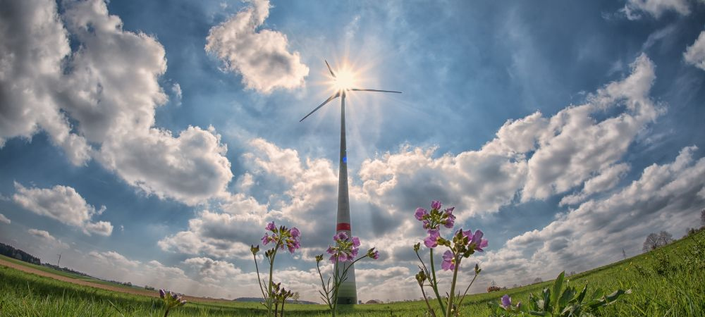

News
EcoCrest Ecosystem Dynamics Blog
EcoCrest Ecosystem Dynamics Blog
Energy Flow
Nutrient Cycling
Trophic Levels
Succession
Disturbance
Biodiversity
Biodiversity
Species Richness
Genetic Diversity
Habitat Fragmentation
Endemism
Conservation Strategies
Population Ecology
Population Ecology
Population Growth Models
Carrying Capacity
Reproductive Strategies
Population Density
Intraspecific Competition
Community Ecology
Community Ecology
Species Interactions
Ecological Niches
Keystone Species
Successional Stages
Community Structure
More Articles
More Articles
Human Impact on the Environment
Pollution Contamination
Deforestation Land Use Change
Climate Change Effects
Overexploitation of Resources
Environmental Policy Management
About Us
EcoCrest
What is the Role of Keystone Species in Ecosystems?
Jul 17, 2024
Keystone species play a crucial role in ecosystems, and their presence or absence can have profound impacts.. You might think of them as the glue that holds everything together.
What is the Impact of Climate Change on Biodiversity?
Jul 17, 2024
Climate change's impact on biodiversity is something we're all aware of, and it's not exactly good news.. The rise in temperatures, changes in precipitation patterns, and more frequent extreme weather events are really taking a toll on ecosystems around the globe.

What is Ecological Succession and How Does it Shape Habitats?
Jul 17, 2024
Ecological succession, wow, it's a fascinating process!. It’s all about how ecosystems change over time.
How to Transform Your Home into an Eco-Friendly Haven: Simple Steps You Can Take Today
Jul 17, 2024
Enhancing Indoor Air Quality with Plants If you're looking to transform your home into an eco-friendly haven, one of the most effective—and let's not forget, aesthetically pleasing—steps you can take today is to enhance indoor air quality with plants.. Believe it or not, our green friends do more than just sit pretty in a corner; they play a crucial role in purifying the air we breathe. First off, let's debunk a common myth that having too many plants indoors will make your home feel like a jungle.
How to Slash Your Carbon Footprint: 10 Surprising Eco Hacks You Need to Know
Jul 17, 2024
Supporting eco-conscious brands and companies, is it really that big of a deal?. Well, let's think about it.
How to Become an Eco-Warrior: Insider Tips for a Sustainable Lifestyle
Jul 17, 2024
Becoming an eco-warrior, huh?. Sounds like a daunting task but hey, it's not as hard as it seems.
Climate Change and its Impact on Ecosystems
Jul 17, 2024
Climate change is a big issue that affects our planet's ecosystems in ways we’re just starting to understand.. It's not something we can ignore anymore.